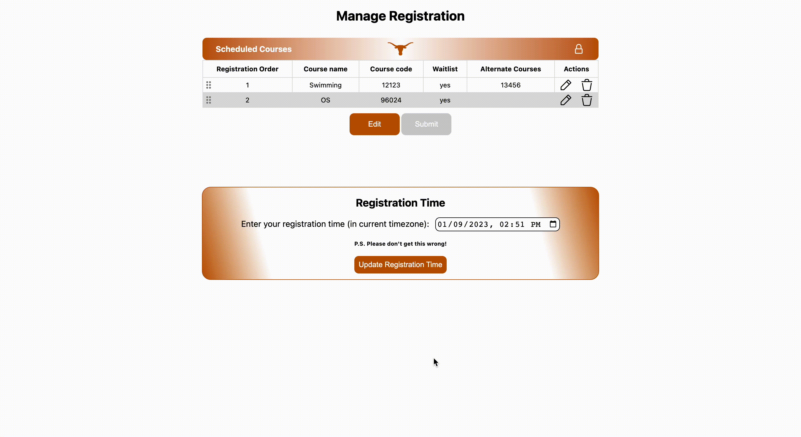
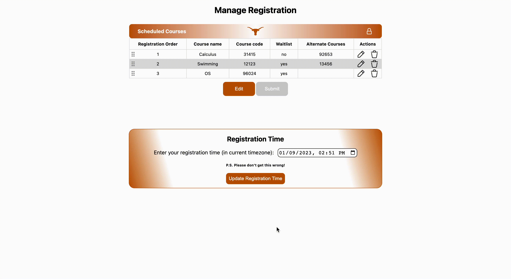

FAQ'S
Before Registration Day
-
Log into your UT account (in chrome) and make sure you select trust browser to help ensure you remain logged in; otherwise the extension can't enter the registration page.
- You can quickly check that you are logged in by going to Canvas.
- We recommend doing this before your registration time.
- Double check your classes and registration time are correct
- Keep your computer on during your registration time. We highly recommend that you are present throughout the duration of your registration process to ensure everything goes smoothly and so you can quickly see your results.
Registration Time Selection
- To select your registration time, please click the manage registration button on your extension which should bring you to this page
-
Please make sure the registration time you enter is based on the time your computer currently shows.
- For instance if your computer displays EST at the moment, convert the CST that UT shows on your RIS page to EST before submitting it.
- If you're in CST right now, put the time UT gives you.
Class Management
- Edit Table: Before modifying the Scheduled Courses table, please click the edit button beneath it. This will allow you to update courses, and when pressing submit will save your selected courses.
-
Add: To add courses to the table, click the add class button (top right of the Scheduled Courses table).
 -
Edit Course: To edit a class you have already added, click the pencil icon in the row you would like to edit.
-
Change Registration Order: To change registration order, drag the 6 dots of the row you would like to move and bring it to the desired position in the registration order.
-
Delete: To delete a course, please click the trash can icon of the row you would like to remove.

How It Works
-
Alternate Courses: If you have courses you would like to register for if you can't get the course you would prefer, list them in the alternate courses section. The extension will try to add one of them, attempting in the order they are listed in.
- Note you will not be added to any waitlists for the alternative courses.
-
At Registration Time: At your registration time, the following will happen:
- Your chrome browser will open your registration page.
- It will attempt to add you into the first course you entered.
- If sucessful, it will attempt to add the next class in the list.
- If unsuccessful, it will attempt to add you to the waitlist if you have that option selected.
- Regardless of whether you watilisted the course, it will then attempt to add you to one of your alternative courses. Regardless of success, it will then go on to add the next course.
- Once completed, a new page with a log of the success/failure of the scheduler will open.
Disclaimer
Disclaimer: This tool is not affiliated with the University of Texas at Austin in any way. It is purely experimental and should be used at your own risk. The creators are not responsible in any way for any damages that may ensue including but not limited to: browser crashing, error with course registration, and irritation.